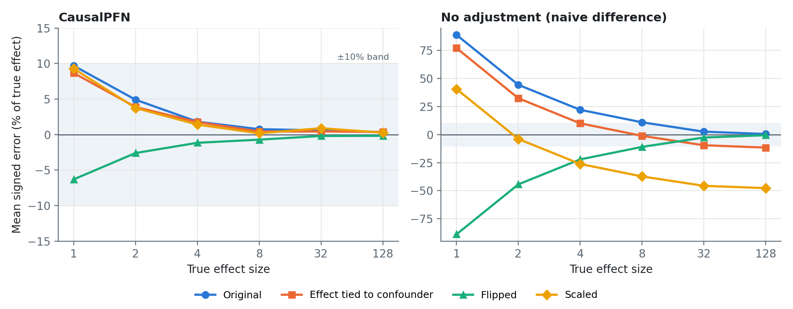
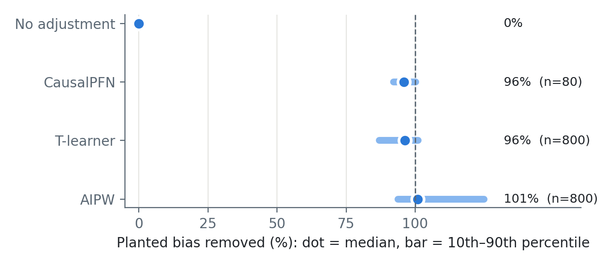
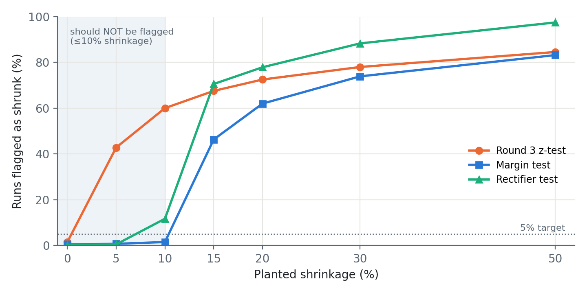

Treatment effect. We want to know how much a treatment changes an outcome on average, for example how much a training course raises salary. This average is called the ATE (average treatment effect).
Confounding. In real (observational) data, the people who get treated are different from those who don't. If motivated people both take the course and earn more, a plain comparison of the two groups mixes the course's effect with motivation. That plain comparison is the naive difference, and it is biased.
Two ways to correct for it:
| Method | How it works | Strength / weakness |
|---|---|---|
| AIPW (classical) | Fits two models: one predicts the outcome, one predicts who gets treated (the propensity). Combines them so either can fix the other's mistakes. | Comes with a proven error bar (standard error). Slower: many model fits per dataset. |
| CausalPFN (foundation model) | A transformer pre-trained on millions of simulated datasets. Reads your whole dataset and outputs the effect in one GPU pass, with no tuning. | Fast and easy. But no guaranteed error bar, and nobody can see why it gives a number. |
The worry: shrinkage. A model that learned mostly from small effects might pull a large real effect back toward the sizes it is used to, such as reporting 100 when the truth is 128. On real data the truth is unknown, so nobody would notice. Our project asked: can a cheap check catch this?
To know whether an answer is right, you need data where the right answer is known. So we simulate data with a true effect that we choose, then see how close each method gets.
What we varied (round 4, the final run):

How to read this: if CausalPFN shrank big effects, its line on the left would dip below zero on the right-hand side of the chart. Instead all four lines go toward zero error as effects grow. And this is real correction, not luck: on the Scaled simulator the naive answer is wrong by nearly half, and CausalPFN still lands within about 1%.
| True effect | 1 | 2 | 4 | 8 | 32 | 128 |
|---|---|---|---|---|---|---|
| Runs more than 10% off | 42% | 7% | 0% | 0% | 0% | 0% |
| Largest error of any run | 28% | 14% | 7% | 4% | 2% | 1.1% |
Of all 1,440 runs, 100 were more than 10% too large and only 18 were more than 10% too small (all 18 at effects 1–2). The errors follow the naive answer: where the naive answer is too high (three simulators), CausalPFN is a bit too high; where it is too low (Flipped), CausalPFN is a bit too low. In other words, CausalPFN corrects for confounding most of the way, but not all of the way. When the effect is small, that leftover is a large share of the answer.
Reading the CausalPFN source code (version 0.1.5) explains both findings. Before the network sees anything, it rescales each group separately:
| Change to the data | A correct model must answer | CausalPFN |
|---|---|---|
| Multiply every outcome by 10 | 10 × the original answer (5.0 → 50.0) | Exact |
| Add 100 to every outcome | The same answer | Exact |
| Add 1, 8 or 64 to treated people only | Answer + 1, 8 or 64 | Exact |
Across 40 datasets the largest deviation was 0.0000. That sounds like great news, but it isn't: the rescaling step undoes these changes by arithmetic, so the network never has to do anything. Passing these checks says nothing about whether the model handles confounding. This also explains why our round 1–3 test could not fail. A useful check has to add effects that differ from person to person, which led to Finding 5.
Idea: take the user's own dataset. To treated people only, add an extra amount that depends on a confounder (bigger for people with a high value of feature 1), centred so the true average effect does not change. This creates new confounding of a known size.

The test gives the right answer on methods we understand (naive 0%, AIPW about 100%) and shows CausalPFN removes about 96%, which matches Finding 2. Its value is that it runs on real data, where the true effect is unknown.
Our detector compares CausalPFN with AIPW. That only works if AIPW is right. It wasn't:
| AIPW's propensity model (who gets treated) | AIPW error at effect 1, n = 500 |
|---|---|
| Boosted trees (used in rounds 1–4) | −46.5% |
| The true propensities (a check only possible in simulation) | +1.4% |
| Degree-2 logistic regression (adopted) | Wide but honest error bars; −0.6% at n = 2,000 |
The boosted trees were overconfident, predicting treatment chances as low as 0.003 where the truth was above 0.03. AIPW divides by these numbers, so tiny mistakes blew up. Fixing it:
To test the tests, we used a stand-in model that we shrink by a known amount (0% to 50%) and counted how often each test raised a flag. Shrinkage up to 10% is treated as “acceptable” and should be flagged at most 5% of the time.

| Test | What it asks | At 10% (should be ≤5%) | At 20% | Verdict |
|---|---|---|---|---|
| Round 3 z-test | Is there any gap toward zero? | 60% | 72.5% | Flags trivial gaps. Not usable. |
| Margin test | Is it shrunk by more than 10%? | 1.5% | 62% | Only test that keeps its error rate. |
| Rectifier test | Same, but the error bar accounts for both methods using the same data | 11.7% | 77.9% | Most powerful, and almost never fooled by a bad AIPW (0.1% vs 93% for the z-test), but over-flags at the boundary. |
Written as a reviewer would see it. The goal is to know what to fix before presenting or submitting.
| Issue | Why it matters / what to do |
|---|---|
| 1. Simulated data only | Every result comes from 4 simulators with 6 features. A reviewer will ask about real data. The planted self-test does not need ground truth, so it can run on standard benchmarks (IHDP, ACIC, LaLonde) right away. |
| 2. The detector looks in the wrong direction | CausalPFN's actual failure is under-adjusting, which mostly inflates answers (100 runs too large vs 18 too small). A one-sided shrinkage test misses this. A two-sided margin (equivalence) test would catch both. |
| 3. No real model that shrinks | The positive controls are stand-ins with planted shrinkage. Do-PFN and CausalFM, where shrinkage has been reported, would show whether the detector catches the real thing. |
| 4. The AIPW fix is flattering | The adopted propensity model matches the simulator. Results should be repeated with a generic, calibrated model. |
| 5. Rectifier test not run on the real model | Per-person CausalPFN predictions were not saved, so the most powerful test only has results on stand-ins. It also over-flags at the 10% boundary (11.7%). |
| 6. Narrow sizes | Only 500 and 2,000 people. Above 1,024 per group CausalPFN switches to a different internal path that was barely tested. |
| 7. Small self-test sample | CausalPFN's 96% comes from 80 datasets (800 for the other methods). |
| 8. Low power at small effects | Where errors actually happen (effect 1), the margin test catches only 31% of runs shrunk by 30%. |
| As a course project | Strong. Clear question, careful method, a real finding with an explanation, and self-correction. |
| As a research paper | A workshop-level negative result with a method contribution. Not yet a journal paper: it needs real-data results (issue 1) and a real shrinking model (issue 3). The earlier novelty check rated the redesigned work 6.5 / 10, “moderate innovation”. |
| Best framing | Not “CausalPFN doesn't shrink”, but “how to audit a causal foundation model: which checks are vacuous, why the reference fails, and a self-test that works without ground truth.” |
Sources: results/round4 (round4_C_anchor.csv, round4_C_anchor_v2.csv, round4_D_controls.csv, round4_F_reference_failure.csv, round4_P_planted_controls.csv, round4_P2_plant_fixed.csv, round4_M_metamorphic.csv). CausalPFN 0.1.5. All figures computed directly from these files.